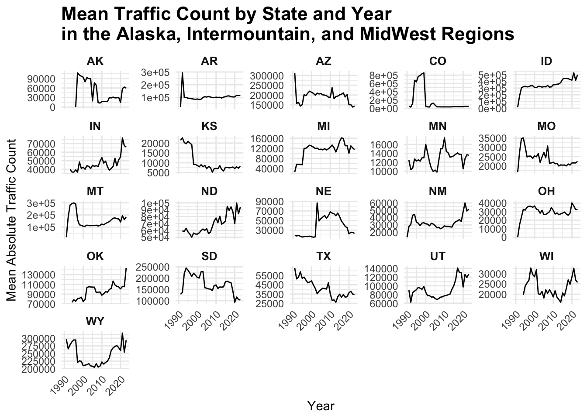

fp2513
library(httr)
library(jsonlite)
res=GET('https://developer.nps.gov/api/v1/newsreleases?limit=10000&api_key=B9nDpbkbrb3kSOjz6kXSxMJ3d6MSpUvt1QqYdeyn')
data = res %>% content("text") %>% jsonlite::fromJSON() %>% as_tibble()
#do i even need this???data %>%
janitor::clean_names() %>%
select(data) %>%
unnest(data) %>%
view()
#do i even need this???Nature vs Machines
In this page we will explore historical data to inform us on how the exponential development and accessibility of automobiles to the general public impacts our interaction with national parks.
Deciding on the topic
To examine how our interactions with national parks have evolved over time, there are numerous aspects to consider. Instead of selecting a topic at random, we wondered if news articles about parks could provide insight into major areas of focus.
For instance, if certain topics repeatedly appear in the news, it could indicate ongoing changes or developments in those aspects of national parks, making them worthy of further investigation.
library(tm)
library(tidytext)
library(stringr)
library(dplyr)
library(ggplot2)
text_data = data %>%
janitor::clean_names() %>%
select(data) %>%
unnest(data) %>%
select(title, abstract, relatedParks, releaseDate)
clean_text = function(text) {
text <- tolower(text)
text <- removePunctuation(text)
text <- removeNumbers(text)
text <- stripWhitespace(text)
text <- removeWords(text, stopwords("en"))
return(text)
}
text_data$cleaned_title = sapply(text_data$title, clean_text)
tidy_titles = text_data %>%
unnest_tokens(word, cleaned_title)library(wordcloud)
word_count = tidy_titles %>%
count(word, sort = TRUE)
wordcloud(words = word_count$word, freq = word_count$n, min.freq = 20)
Consequently, there was no consistently reported topic across the years.
Alternatively, we determined that the most relevant development in recent history is the introduction of automobiles to the public. This is highly relevant for examining how our exponential relationship with automobiles and other forms of transport has changed our interaction with national parks, particularly in terms of human-wildlife interactions as traffic to these parks has increased.
Many national parks emphasize preservation, but with increasing human contact, management needs to be flexible. To quantify how human-wildlife interactions have changed over the years, we can look at visitation pressure. High traffic volumes indicate heavy visitor use, leading to environmental degradation, pollution, and wildlife disturbance. Understanding traffic patterns helps inform management measures to protect sensitive ecosystems and manage human-wildlife interactions effectively. This can help prioritize areas for resource investment or upgrades, such as waste management, road improvements, and parking facilities. Tracking changes in traffic over the years can also indicate broader trends related to climate change, demographic shifts, and changing recreational preferences.
A limitation of this approach is that a more thorough qualitative analysis could have been conducted if more time were available to do a better search of major topics of focus, rather than relying on an R function to count the features of terms in the articles.
Initial Data Exploration and Recognition of Limitations
Analyzing traffic flow can provide insights into whether current infrastructure meets visitor needs. High traffic flow and potential congestion can lead to increased fuel consumption, decreased productivity, negative impacts on local businesses, and higher pollution levels. Optimizing traffic flow is essential.
To achieve more granularity, I decided to separate the analysis by state. Different states have different types of national parks, each requiring varying levels of traffic flow (some parks may be more accessible by car than others).
A key limitation is the dataset’s high level of granularity, which required prioritizing specific aspects for this analysis. For example, traffic counts at different entrances or roads within a single park can vary significantly.
his_traffic_df = read_csv(file = "data/(east) Query Builder for Traffic Counts (1985 - Last Calendar Year).csv",
na = c("NA", ",", ".")) %>%
janitor::clean_names() %>%
filter(park_name %in% c("Fire Island NS", "Gateway NRA", "Saratoga NHP"))
ggplot(his_traffic_df, aes(x = year, y = traffic_count_total, color = traffic_counter)) +
geom_point() +
geom_smooth(method = "loess", se = FALSE) +
labs(title = "Traffic Count Totals by Year for Selected Parks in New York",
x = "Year",
y = "Total Traffic Count",
color = "Traffic Counter") +
theme_minimal() +
theme(legend.position = "bottom") +
facet_wrap(~ park_name, scales = "free_y")
Additionally, each state has a mix of park types, leading to disparities in traffic counts across different national parks. Analyzing every national park in every state would be overwhelming. Therefore, we decided to use the annual mean traffic count for each state to provide a nationwide analysis of traffic impact on national parks.
Mean Annual Traffic Count by State
The mean annual traffic counts for each state across the years are presented below. It would be interesting to investigate whether obvious increases or decreases in traffic counts are due to changing interest in national parks or the introduction of popular parks incentivizing visits.
(find all the plots for the seperate states and position them here)
read_csv(file = "data/(east) Query Builder for Traffic Counts (1985 - Last Calendar Year).csv",
na = c("NA", ",", ".")) %>%
janitor::clean_names() # Ensure all parks have corresponding states
park_to_state = tibble::tibble(
park_name_total = c(
"Acadia NP", "Allegheny Portage Railroad NHS", "Appomattox Court House NHP",
"Assateague Island NS", "Booker T. Washington NM", "Cape Cod NS",
"Colonial NHP", "Delaware Water Gap NRA", "Fire Island NS",
"Fort McHenry NM & HS", "Fort Necessity NB", "Fredericksburg & Spotsylvania NMP",
"Gateway NRA", "Gauley River NRA", "George Washington Birthplace NM",
"Gettysburg NMP", "Home of Franklin D. Roosevelt NHS", "Hopewell Furnace NHS",
"Johnstown Flood NMEM", "Katahdin Woods and Waters NM",
"Martin Van Buren NHS", "Minute Man NHP", "Morristown NHP",
"New River Gorge NP & PRES", "Paterson Great Falls NHP", "Petersburg NB",
"Richmond NBP", "Saint-Gaudens NHP", "Saratoga NHP", "Shenandoah NP",
"Steamtown NHS", "Upper Delaware S&RR", "Valley Forge NHP",
"Vanderbilt Mansion NHS"
),
state = c(
"ME", "PA", "VA", "MD", "VA", "MA", "VA", "NJ", "NY", "MD", "PA", "VA",
"WV", "WV", "VA", "PA", "NY", "PA", "PA", "PA", "ME", "NY", "MA", "NJ",
"VA", "VA", "NH", "NY", "VA", "PA", "PA", "PA", "NY", "PA" # Add the missing state(s) here
)
)
traffic_counts_df = park_to_state %>%
full_join(his_traffic_df, by = "park_name_total")
library(dplyr)
library(ggplot2)
# Calculate mean traffic_count_total for each state and year
mean_traffic_counts_by_state_year = traffic_counts_df %>%
group_by(state, year) %>%
summarise(mean_traffic_count = mean(traffic_count_total, na.rm = TRUE), .groups = "drop")
# Calculate additional statistics for each state
traffic_count_stats = traffic_counts_df %>%
group_by(state) %>%
summarise(
min_traffic_count = min(traffic_count_total, na.rm = TRUE),
year_of_min_traffic_count = year[which.min(traffic_count_total)],
max_traffic_count = max(traffic_count_total, na.rm = TRUE),
year_of_max_traffic_count = year[which.max(traffic_count_total)],
difference_min_max = max_traffic_count - min_traffic_count,
.groups = "drop"
)
# Plot the data with faceting by state
ggplot(mean_traffic_counts_by_state_year, aes(x = year, y = mean_traffic_count)) +
geom_line() +
facet_wrap(~ state, scales = "free_y") +
theme_minimal() +
labs(title = "Mean Traffic Count by State and Year\nin the NorthEast Region",
x = "Year",
y = "Mean Traffic Count") +
theme(
strip.text = element_text(size = 10, face = "bold"),
plot.title = element_text(size = 16, face = "bold"),
axis.text.x = element_text(angle = 45, hjust = 1)
)
read_csv(file = "data/(Alaska, InterM, MW) Query Builder for Traffic Counts (1985 - Last Calendar Year).csv",
na = c("NA", ",", ".")) %>%
janitor::clean_names() library(dplyr)
library(tibble)
library(tidyr)
# Create the vectors with park names and states
park_name_total = c(
"Amistad NRA", "Apostle Islands NL", "Arches NP", "Arkansas Post NMEM", "Badlands NP",
"Bandelier NM", "Big Bend NP", "Big Thicket NPRES", "Bighorn Canyon NRA",
"Black Canyon of the Gunnison NP", "Bryce Canyon NP", "Buffalo NR", "Canyon de Chelly NM",
"Canyonlands NP", "Capitol Reef NP", "Capulin Volcano NM", "Carlsbad Caverns NP",
"Cedar Breaks NM", "Chaco Culture NHP", "Chickasaw NRA", "Colorado NM", "Coronado NMEM",
"Curecanti NRA", "Cuyahoga Valley NP", "Denali NP & PRES", "Devils Tower NM", "Dinosaur NM",
"El Malpais NM", "El Morro NM", "Florissant Fossil Beds NM", "Fort Laramie NHS",
"Fort Larned NHS", "Fossil Butte NM", "George Washington Carver NM", "Glacier NP",
"Glen Canyon NRA", "Grand Canyon NP", "Grand Portage NM", "Grand Teton NP",
"Great Sand Dunes NP & PRES", "Guadalupe Mountains NP", "Homestead NHP", "Hopewell Culture NHP",
"Hot Springs NP", "Hubbell Trading Post NHS", "Indiana Dunes NP", "Jewel Cave NM",
"John D. Rockefeller, Jr. MEM PKWY", "Katmai NP & PRES", "Kenai Fjords NP", "Keweenaw NHP",
"Lake Meredith NRA", "Lincoln Boyhood NMEM", "Little Bighorn Battlefield NM",
"Lyndon B. Johnson NHP", "Mesa Verde NP", "Minuteman Missile NHS", "Missouri NRR",
"Montezuma Castle NM", "Mount Rushmore NMEM", "Natural Bridges NM", "Navajo NM",
"Niobrara NSR", "Organ Pipe Cactus NM", "Ozark NSR", "Padre Island NS", "Palo Alto Battlefield NHP",
"Pea Ridge NMP", "Petrified Forest NP", "Petroglyph NM", "Pictured Rocks NL", "Pipe Spring NM",
"River Raisin NBP", "Rocky Mountain NP", "Saguaro NP", "San Antonio Missions NHP",
"Scotts Bluff NM", "Sleeping Bear Dunes NL", "Sunset Crater Volcano NM", "Tallgrass Prairie NPRES",
"Theodore Roosevelt NP", "Tonto NM", "Tuzigoot NM", "Valles Caldera NPRES", "Walnut Canyon NM",
"Washita Battlefield NHS", "White Sands NP", "Wilson's Creek NB", "Wind Cave NP", "Yellowstone NP",
"Zion NP"
)
state = c(
"TX", "WI", "UT", "AR", "SD", "NM", "TX", "TX", "MT/WY", "CO", "UT", "AR", "AZ", "UT", "UT",
"NM", "NM", "UT", "NM", "OK", "CO", "AZ", "CO", "OH", "AK", "WY", "CO/UT", "NM", "NM", "CO",
"WY", "KS", "WY", "MO", "MT", "AZ/UT", "AZ", "MN", "WY", "CO", "TX", "NE", "OH", "AR", "AZ",
"IN", "SD", "WY", "AK", "AK", "MI", "TX", "IN", "MT", "TX", "CO", "SD", "NE/SD", "AZ", "SD",
"UT", "AZ", "NE", "AZ", "MO", "TX", "TX", "AR", "AR", "AZ", "NM", "MI", "AZ", "MI",
"AZ", "TX", "NE", "MI", "AZ", "KS", "ND", "AZ", "AZ", "NM", "AZ", "OK", "NM", "MO", "SD",
"WY/MT/ID", "UT"
)
# If lengths are not the same, stop and fix the mismatch
if (length(park_name_total) != length(state)) {
stop("Lengths of park_name_total and state do not match!")
}
# Create the tibble
AL_IM_MW_park_to_state = tibble(
park_name_total = park_name_total,
state = state
)
# Separate rows with multiple states
AL_IM_MW_park_to_state = AL_IM_MW_park_to_state %>%
separate_rows(state, sep = "/")
AL_IM_MW_his_traffic_df =
read_csv(file = "data/(Alaska, InterM, MW) Query Builder for Traffic Counts (1985 - Last Calendar Year).csv", na = c("NA", ",", ".")) %>%
janitor::clean_names()
AL_IM_MW_traffic_counts_df = AL_IM_MW_park_to_state %>%
full_join(AL_IM_MW_his_traffic_df, by = "park_name_total")
library(dplyr)
library(ggplot2)
# Calculate mean absolute traffic count for each state and year
AL_IM_MW_mean_traffic_counts_by_state_year = AL_IM_MW_traffic_counts_df %>%
group_by(state, year) %>%
summarise(mean_traffic_count = mean(abs(traffic_count_total), na.rm = TRUE), .groups = "drop")
# Calculate additional statistics for each state using absolute traffic count
AL_IM_MW_traffic_count_stats = AL_IM_MW_traffic_counts_df %>%
group_by(state) %>%
summarise(
min_traffic_count = min(abs(traffic_count_total), na.rm = TRUE),
year_of_min_traffic_count = year[which.min(abs(traffic_count_total))],
max_traffic_count = max(abs(traffic_count_total), na.rm = TRUE),
year_of_max_traffic_count = year[which.max(abs(traffic_count_total))],
difference_min_max = max_traffic_count - min_traffic_count,
.groups = "drop"
)
# Plot the data with faceting by state
ggplot(AL_IM_MW_mean_traffic_counts_by_state_year, aes(x = year, y = mean_traffic_count)) +
geom_line() +
facet_wrap(~ state, scales = "free_y") +
theme_minimal() +
labs(title = "Mean Traffic Count by State and Year\nin the Alaska, Intermountain Region, and MidWest Regions",
x = "Year",
y = "Mean Absolute Traffic Count") +
theme(
strip.text = element_text(size = 10, face = "bold"),
plot.title = element_text(size = 16, face = "bold"),
axis.text.x = element_text(angle = 45, hjust = 1)
)
read_csv(file = "data/(CAP_PAC) Query Builder for Traffic Counts (1985 - Last Calendar Year).csv",
na = c("NA", ",", ".")) %>%
janitor::clean_names() library(dplyr)
library(tibble)
library(tidyr)
# Create the vectors with park names and states
park_name_total = c(
"Big Hole NB", "Cabrillo NM", "Catoctin Mountain Park", "Chesapeake & Ohio Canal NHP",
"City of Rocks NRES", "Crater Lake NP", "Craters of the Moon NM & PRES", "Death Valley NP",
"Devils Postpile NM", "Fort Point NHS", "Fort Vancouver NHS", "Fort Washington Park",
"George Washington MEM PKWY", "Golden Gate NRA", "Great Basin NP", "Greenbelt Park",
"Haleakala NP", "Harpers Ferry NHP", "Hawaii Volcanoes NP", "John Day Fossil Beds NM",
"Joshua Tree NP", "Kings Canyon NP", "Lake Mead NRA", "Lake Roosevelt NRA", "Lassen Volcanic NP",
"Lava Beds NM", "LBJ Memorial Grove on the Potomac", "Lewis & Clark NHP", "Manassas NBP",
"Manzanar NHS", "Mojave NPRES", "Monocacy NB", "Mount Rainier NP", "National Capital Parks East",
"Nez Perce NHP", "North Cascades NP", "Olympic NP", "Oregon Caves NM & PRES", "Pinnacles NP",
"Piscataway Park", "Point Reyes NS", "Prince William Forest Park", "Pu'ukohola Heiau NHS",
"Redwood NP", "Ross Lake NRA", "San Juan Island NHP", "Santa Monica Mountains NRA", "Sequoia NP",
"Tule Lake NM", "War in the Pacific NHP", "Whiskeytown NRA", "Whitman Mission NHS", "Yosemite NP"
)
state = c(
"MT", "CA", "MD", "MD/WV", "ID", "OR", "ID", "CA/NV", "CA", "CA", "WA", "MD",
"DC/VA/MD", "CA", "NV", "MD", "HI", "WV/MD/VA", "HI", "OR", "CA", "CA", "NV/AZ",
"WA", "CA", "CA", "DC", "ID/MT/OR/WA", "VA", "CA", "CA", "MD", "WA", "DC/MD",
"ID", "WA", "WA", "OR", "CA", "MD", "CA", "VA", "HI", "CA", "WA", "WA", "CA",
"CA", "CA", "GU", "CA", "WA", "CA"
)
# If lengths are not the same, stop and fix the mismatch
if (length(park_name_total) != length(state)) {
stop("Lengths of park_name_total and state do not match!")
}
# Create the tibble
CAP_PAC_park_to_state = tibble(
park_name_total = park_name_total,
state = state
)
# Separate rows with multiple states
CAP_PAC_park_to_state = CAP_PAC_park_to_state %>%
separate_rows(state, sep = "/")
CAP_PAC_his_traffic_df =
read_csv(file = "data/(CAP_PAC) Query Builder for Traffic Counts (1985 - Last Calendar Year).csv", na = c("NA", ",", ".")) %>%
janitor::clean_names()
CAP_PAC_traffic_counts_df = CAP_PAC_park_to_state %>%
full_join(CAP_PAC_his_traffic_df, by = "park_name_total")
library(dplyr)
library(ggplot2)
# Calculate mean absolute traffic count for each state and year
CAP_PAC_mean_traffic_counts_by_state_year = CAP_PAC_traffic_counts_df %>%
group_by(state, year) %>%
summarise(mean_traffic_count = mean(abs(traffic_count_total), na.rm = TRUE), .groups = "drop")
# Calculate additional statistics for each state using absolute traffic count
CAP_PAC_traffic_count_stats = CAP_PAC_traffic_counts_df %>%
group_by(state) %>%
summarise(
min_traffic_count = min(abs(traffic_count_total), na.rm = TRUE),
year_of_min_traffic_count = year[which.min(abs(traffic_count_total))],
max_traffic_count = max(abs(traffic_count_total), na.rm = TRUE),
year_of_max_traffic_count = year[which.max(abs(traffic_count_total))],
difference_min_max = max_traffic_count - min_traffic_count,
.groups = "drop"
)
# Plot the data with faceting by state
ggplot(CAP_PAC_mean_traffic_counts_by_state_year, aes(x = year, y = mean_traffic_count)) +
geom_line() +
facet_wrap(~ state, scales = "free_y") +
theme_minimal() +
labs(title = "Mean Traffic Count by State and Year\nin National Capital and Pacific West Regions",
x = "Year",
y = "Mean Absolute Traffic Count") +
theme(
strip.text = element_text(size = 10, face = "bold"),
plot.title = element_text(size = 16, face = "bold"),
axis.text.x = element_text(angle = 45, hjust = 1)
)
read_csv(file = "data/SE Query Builder for Traffic Counts (1985 - Last Calendar Year).csv",
na = c("NA", ",", ".")) %>%
janitor::clean_names() library(dplyr)
library(tibble)
library(tidyr)
# Create the vectors with park names and states
park_name_total = c(
"Abraham Lincoln Birthplace NHP", "Andersonville NHS", "Andrew Johnson NHS",
"Big Cypress NPRES", "Big South Fork NRRA", "Biscayne NP", "Blue Ridge PKWY",
"Camp Nelson NM", "Canaveral NS", "Cane River Creole NHP", "Cape Hatteras NS",
"Cape Lookout NS", "Charles Pinckney NHS", "Chattahoochee River NRA",
"Chickamauga & Chattanooga NMP", "Congaree NP", "Cowpens NB",
"Cumberland Gap NHP", "De Soto NMEM", "Everglades NP", "Fort Caroline NMEM",
"Fort Donelson NB", "Fort Frederica NM", "Fort Matanzas NM", "Fort Pulaski NM",
"Fort Raleigh NHS", "Great Smoky Mountains NP", "Guilford Courthouse NMP",
"Gulf Islands NS", "Horseshoe Bend NMP", "Jean Lafitte NHP & PRES",
"Kennesaw Mountain NBP", "Kings Mountain NMP", "Little River Canyon NPRES",
"Mammoth Cave NP", "Moores Creek NB", "Natchez NHP", "Natchez Trace PKWY",
"Ninety Six NHS", "Obed W&SR", "Ocmulgee Mounds NHP", "Russell Cave NM",
"Shiloh NMP", "Stones River NB", "Timucuan EHP", "Vicksburg NMP",
"Wright Brothers NMEM"
)
state = c(
"KY", "GA", "TN", "FL", "TN/KY", "FL", "VA/NC", "KY", "FL", "LA", "NC", "NC",
"SC", "GA", "GA/TN", "SC", "SC", "KY/TN/VA", "FL", "FL", "FL", "TN", "GA",
"FL", "GA", "NC", "TN/NC", "NC", "FL/MS", "AL", "LA", "GA", "SC", "AL", "KY",
"NC", "MS", "MS/AL/TN", "SC", "TN", "GA", "AL", "TN", "TN", "FL", "MS", "NC"
)
# If lengths are not the same, stop and fix the mismatch
if (length(park_name_total) != length(state)) {
stop("Lengths of park_name_total and state do not match!")
}
# Create the tibble
SE_park_to_state = tibble(
park_name_total = park_name_total,
state = state
)
# Separate rows with multiple states
SE_park_to_state = SE_park_to_state %>%
separate_rows(state, sep = "/")
SE_his_traffic_df =
read_csv(file = "data/SE Query Builder for Traffic Counts (1985 - Last Calendar Year).csv", na = c("NA", ",", ".")) %>%
janitor::clean_names()
SE_traffic_counts_df = SE_park_to_state %>%
full_join(SE_his_traffic_df, by = "park_name_total")
library(dplyr)
library(ggplot2)
# Calculate mean absolute traffic count for each state and year
SE_mean_traffic_counts_by_state_year = SE_traffic_counts_df %>%
group_by(state, year) %>%
summarise(mean_traffic_count = mean(abs(traffic_count_total), na.rm = TRUE), .groups = "drop")
# Calculate additional statistics for each state using absolute traffic count
SE_traffic_count_stats = SE_traffic_counts_df %>%
group_by(state) %>%
summarise(
min_traffic_count = min(abs(traffic_count_total), na.rm = TRUE),
year_of_min_traffic_count = year[which.min(abs(traffic_count_total))],
max_traffic_count = max(abs(traffic_count_total), na.rm = TRUE),
year_of_max_traffic_count = year[which.max(abs(traffic_count_total))],
difference_min_max = max_traffic_count - min_traffic_count,
.groups = "drop"
)
# Plot the data with faceting by state
ggplot(SE_mean_traffic_counts_by_state_year, aes(x = year, y = mean_traffic_count)) +
geom_line() +
facet_wrap(~ state, scales = "free_y") +
theme_minimal() +
labs(title = "Mean Traffic Count by State and Year\nin SouthEast Region",
x = "Year",
y = "Mean Absolute Traffic Count") +
theme(
strip.text = element_text(size = 10, face = "bold"),
plot.title = element_text(size = 16, face = "bold"),
axis.text.x = element_text(angle = 45, hjust = 1)
)
Shiny App
To contribute our data analysis of comparing traffic counts and national parking lot data to the wider knowledge community, to whoever may need this information we have created a shiny app. This shiny app allows selection of two different states to compare the traffic count across the years and also seperated by the months.
This is also in attempts to address parts of our limitations where we have comprimised the information provided in the dataset. In the shiny app, each state’s plot not only shows how their traffic count has developed across the years but this development is also seperated by the months. This provides insight into potential monthly trends, where more traffic may occur through the year. Or even unexpected consistently in traffic count through the year.
Pairing Traffic Count with Parking Lot Data
The mean annual traffic counts for each state across the years reveal trends that can be used to investigate whether fluctuations are due to a decreased interest in national parks or the introduction of popular parks incentivizing more visits.
However, traffic counts may not be the best estimator for the impact of automobiles on human-wildlife interactions in national parks. This is because traffic count data does not specify the type of traffic it includes. It could be national park maintenance vehicles, visitors, or cars merely passing through without interacting with the park.
To more directly quantify the impact of automobiles on national parks, examining parking lot usage may be more insightful. Parking lots are clearly man-made and reflect the park’s demand for car access, indicating efforts to accommodate visitors. By connecting traffic flow data with parking lot usage, we can better understand the needs of national parks and potentially improve traffic management and parking facilities.
We could expect that high traffic counts in a state’s national parks might incentivize a higher ratio of parking lots to parks in that state. States that do not follow this trend may need updates to their parking infrastructure. Even if not, this analysis would encourage a closer look at the types of parks that, despite high traffic flow, do not require additional parking lots. We focused on the ratio rather than the absolute number of parking lots because states with more national parks would naturally need more parking. This approach avoids disproportionate representation and ensures a fair comparison.
We created an interactive US Plotly map where each state’s color is based on the ratio of national park parking lots to the number of parks. Hovering over a state reveals the state name, ratio, and additional traffic count data, including minimum and maximum counts and their respective years. This visualization combines infrastructure and visitor trends, providing detailed insights without cluttering the visual. Plotly allows overlaying of the two information datasets (traffic counts and parking lots) for a comprehensive view.
library(dplyr)
# Merge the two dataframes by adding rows
merged_East_AL_traffic_counts = bind_rows(AL_IM_MW_traffic_count_stats, traffic_count_stats)
merged_East_AL_CAP_traffic_counts = bind_rows(merged_East_AL_traffic_counts, CAP_PAC_traffic_count_stats)
FULL_merged_traffic_counts = bind_rows(merged_East_AL_CAP_traffic_counts, SE_traffic_count_stats)geo_coord_df =
read_csv(file = "data/NPS_-_Points_of_Interest_(POIs)_-_Geographic_Coordinate_System.csv", na = c("NA", ",", ".")) %>%
janitor::clean_names()library(tigris)
library(sf)
library(dplyr)
library(viridis)
library(plotly)
# Convert geo_coord_df to spatial dataframe with latitude/longitude coordinates
map_geo_coord_df = st_as_sf(geo_coord_df, coords = c("x", "y"), crs = 4326)
# Get US states shapefile (boundary) and ensure CRS is correct
US_states = states(cb = TRUE)library(tigris)
library(sf)
library(dplyr)
library(viridis)
library(plotly)
# Convert geo_coord_df to spatial dataframe with latitude/longitude coordinates
map_geo_coord_df = st_as_sf(geo_coord_df, coords = c("x", "y"), crs = 4326)
# Get US states shapefile (boundary) and ensure CRS is correct
US_states = states(cb = TRUE)
US_states_sf = st_as_sf(US_states)
# Transform coordinate reference system (if necessary)
US_states_sf = st_transform(US_states_sf, crs = 4326)
# Spatial join between parking lot coordinates and US states polygons
map_geo_coord_sf = st_join(map_geo_coord_df, US_states_sf, join = st_within)
# Filter for Parking Lots and remove missing state names
map_geo_coord_sf = map_geo_coord_sf %>%
filter(poitype == "Parking Lot") %>%
filter(!is.na(NAME))
# Count parking lots per state
parking_lots_per_state = map_geo_coord_sf %>%
group_by(NAME) %>%
summarise(parking_lots = n(), .groups = "drop")
# Convert parking_lots_per_state to a regular dataframe (no geometry)
parking_lots_per_state_df = as.data.frame(parking_lots_per_state)
# Merge the parking_lots_per_state data with US_states_sf using left_join
US_states_sf = US_states_sf %>%
left_join(parking_lots_per_state_df, by = "NAME")
# Prepare the data for plotting with plotly
US_states_sf_df = as.data.frame(US_states_sf)
US_states_sf_df$geometry = NULL # Remove the geometry for plotly
# Create an interactive plotly map
plot_ly(data = US_states_sf_df, type = "choropleth",
locations = ~STUSPS, locationmode = "USA-states",
z = ~parking_lots, text = ~paste("State:", NAME, "<br>Parking Lots:", parking_lots),
colorscale = "Viridis", reversescale = TRUE,
marker = list(line = list(color = "black", width = 0.5))) %>%
colorbar(title = "Parking Lots") %>%
layout(title = "Number of Parking Lots in National Parks per State",
geo = list(scope = 'usa',
projection = list(type = 'albers usa'),
showlakes = TRUE,
lakecolor = toRGB('white')))US_states_sf = st_as_sf(US_states)
# Transform coordinate reference system (if necessary)
US_states_sf = st_transform(US_states_sf, crs = 4326)
# Spatial join between geo_coord_df and US states polygons
map_geo_coord_sf = st_join(map_geo_coord_df, US_states_sf)
# Filter for "Parking Lot" and remove rows with missing state names
map_geo_coord_sf = map_geo_coord_sf %>%
filter(poitype == "Parking Lot") %>%
filter(!is.na(NAME)) # Ensure no missing state names
# Count unique national parks per state (based on unique unitname)
national_parks_per_state = map_geo_coord_sf %>%
group_by(NAME) %>%
summarise(national_parks = n_distinct(unitname), .groups = "drop")
# Count the number of parking lots per state
parking_lots_per_state = map_geo_coord_sf %>%
group_by(NAME) %>%
summarise(parking_lots = n(), .groups = "drop")
# Merge the parking lots and national parks counts into one regular dataframe
state_counts = st_join(parking_lots_per_state, national_parks_per_state, left = TRUE) %>%
mutate(ratio = parking_lots / national_parks) # Calculate the ratio of parking lots to national parks
# Merge the ratio data with the spatial states data using a left join
US_states_sf = US_states_sf %>%
st_join(state_counts, left = TRUE)
# Prepare the data for plotting with plotly
US_states_sf_df = as.data.frame(US_states_sf)
US_states_sf_df$geometry = NULL # Remove the geometry for plotly
# Merge traffic_count_stats data with the US_states_sf_df based on state abbreviation (STUSPS)
US_states_sf_df = US_states_sf_df %>%
left_join(FULL_merged_traffic_counts, by = c("STUSPS" = "state"))
# Create an interactive plotly map with additional stats
plot_ly(data = US_states_sf_df, type = "choropleth",
locations = ~STUSPS, locationmode = "USA-states",
z = ~ratio, text = ~paste("State:", NAME,
"<br>Ratio:", round(ratio, 2),
"<br>Min Traffic Count:", min_traffic_count,
"<br>Year of Min Traffic Count:", year_of_min_traffic_count,
"<br>Max Traffic Count:", max_traffic_count,
"<br>Year of Max Traffic Count:", year_of_max_traffic_count,
"<br>Difference (Max - Min):", difference_min_max),
colorscale = "Viridis", reversescale = TRUE,
marker = list(line = list(color = "black", width = 0.5))) %>%
colorbar(title = "Parking Lot to National Park Ratio") %>%
layout(title = "Ratio of Parking Lots to National Parks per State with Traffic Count Stats",
geo = list(scope = 'usa',
projection = list(type = 'albers usa'),
showlakes = TRUE,
lakecolor = toRGB('white')))Concluding Remarks
A key limitation of this analysis is that it represents only an initial step in the comprehensive study of traffic patterns and their implications in national parks. The current analysis, while insightful, provides a broad overview and suggests several avenues for further, more detailed research.
Future studies should aim to delve deeper into specific aspects of human-wildlife interactions and environmental impacts. For instance, one critical area for further investigation is the quantification of pollution levels within national parks over the years. This could include analyzing the types and sources of pollutants, their temporal trends, and their effects on local ecosystems and wildlife.
Additionally, understanding visitor experience and satisfaction through systematic surveys can offer valuable insights into the adequacy of current infrastructure. Surveys could assess the effectiveness of parking facilities, the sufficiency of amenities, and overall visitor satisfaction. This data would be instrumental in guiding resource allocation and infrastructure development to better meet visitor needs and protect park environments.
Moreover, examining the distribution of resources, such as parking lots and other facilities, in relation to traffic patterns can highlight areas where investments are needed. This could involve spatial analysis to identify under-served areas and model the potential impact of proposed infrastructure improvements.
In summary, while this initial analysis provides a foundational understanding, it underscores the need for more targeted research to address specific questions related to environmental impacts, visitor experiences, and infrastructure adequacy in national parks. These efforts will contribute to a more nuanced and actionable understanding of how to balance conservation efforts with visitor needs in these treasured natural spaces.